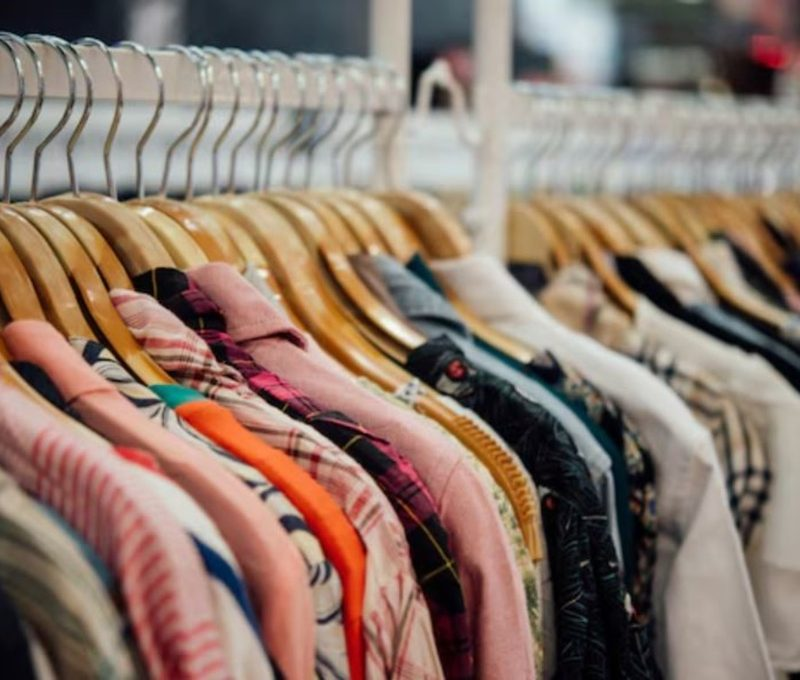

La ropa baja de precio: qué está pasando con la industria
El INDEC registra bajas en los precios de la indumentaria, pero la producción textil cae 22,6% y se pierden empleos. Qué hay detrás de la ropa más barata.
En agosto, prendas de vestir y calzado fue el rubro que más bajó en la inflación del INDEC. Pero el alivio en las vidrieras convive con fábricas a media capacidad, menos empleo y más ropa importada.
El precio de la ropa en Argentina se volvió más barato en términos relativos. En agosto de 2026, el INDEC midió que los precios de prendas de vestir y calzado bajaron 0,6% mensual, mientras que la inflación general subió 1,7%. Fue la segunda baja consecutiva del rubro y la séptima reducción nominal en 20 meses. Detrás de ese dato hay un mercado textil que se está reconfigurando.
Qué dicen los precios de la indumentaria
En julio la caída había sido de 1,3% mensual. En la comparación interanual, la indumentaria subió 11,0% en agosto frente a 33,5% del índice general, según los datos del INDEC difundidos por FashionUnited. En otras palabras, la ropa se encareció cerca de un tercio de lo que subió el promedio de los precios en los últimos doce meses.
El tema ya estaba en la agenda a comienzos de 2026. El ministro de Economía, Luis Caputo, dijo que nunca compraba ropa en el país porque “es un robo”, y la Fundación Pro Tejer respondió que los impuestos representan alrededor del 50% del precio final de una remera. En ese contexto, el INDEC informó que los precios de la indumentaria habían caído 0,5% en enero.
La industria textil argentina produce cada vez menos
El abaratamiento no llega de la mano de una industria más fuerte. Según la Federación de Industrias Textiles Argentinas (FITA), la actividad textil cayó 13% interanual en julio y acumuló una baja de 22,6% en los primeros siete meses de 2026. La industria en general acumuló una contracción de 2,6% en el mismo período, por lo que el textil quedó muy por debajo del promedio.
El sector utilizó apenas el 45,3% de su capacidad instalada en julio, frente al 58,2% del promedio industrial. FITA calificó este deterioro como estructural y advirtió que no ve señales de recuperación: la actividad permanece estancada en niveles bajos desde fines de 2025.
El empleo también cedió. En junio, el conjunto de textil, confección, cuero y calzado tenía 92.531 puestos formales, 16.536 menos que un año antes y 28.322 menos que en diciembre de 2023. A la vez, entre textiles y confecciones había 4.282 establecimientos, 517 menos que en junio de 2025.
Importaciones de ropa: entra más prenda terminada, menos insumo
Entre enero y agosto, las importaciones de prendas crecieron 53,5% y las de confecciones 21,8%, según FITA. En cambio, cayeron las compras de insumos: 42,6% en hilados y 52,7% en tejidos planos. Es decir, ingresa más ropa terminada y menos materia prima para fabricarla en el país.
La inversión también se retrae. Las importaciones de maquinaria textil sumaron USD 78 millones entre enero y agosto, un 31,2% menos que en el mismo período de 2025. Sin renovar máquinas, advierte el sector, la competitividad futura de la industria local queda en riesgo.
¿Ropa más barata significa más ventas?
Los precios más bajos no se tradujeron en un salto de ventas. Las ventas de indumentaria, calzado y marroquinería en shoppings crecieron 9,7% interanual en julio a precios corrientes, pero cayeron cerca de 1,6% en términos reales, según una aproximación de FashionUnited con datos preliminares del INDEC. Las señales son mixtas: la Confederación Argentina de la Mediana Empresa (CAME) midió un alza real de 6,4% en textiles e indumentaria en pymes minoristas durante agosto.
Para el consumidor, la ecuación tiene dos lados. En el corto plazo hay más oferta importada y precios que suben menos que la inflación. A mediano plazo, una industria local que se achica puede reducir la variedad de producción nacional y los empleos que sostienen el consumo. Ese es el debate de fondo sobre qué modelo productivo busca el país.
Qué mirar de ahora en adelante
Los indicadores que conviene seguir son el IPC mensual del INDEC, los informes de FITA y los boletines de la Fundación Pro Tejer. Si los precios de la ropa continúan por debajo de la inflación mientras la producción local sigue cayendo, el costo del abaratamiento se medirá en empleo y capacidad productiva.